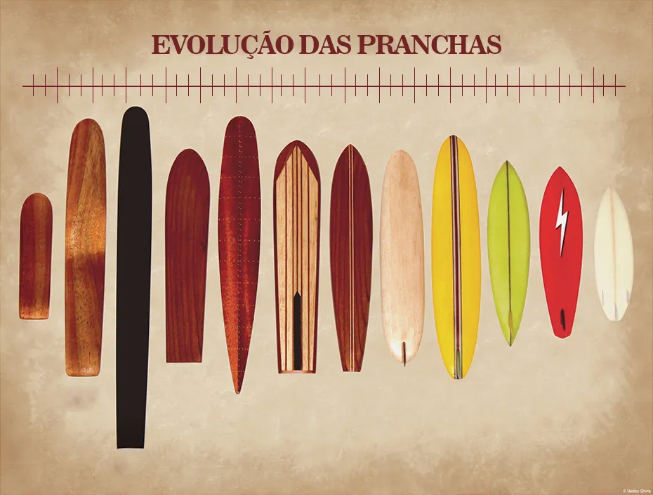
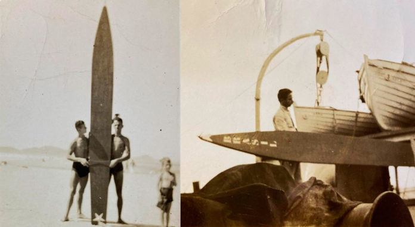
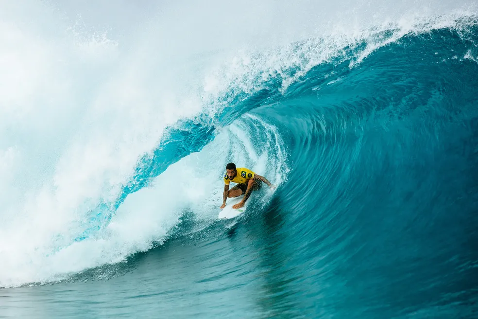
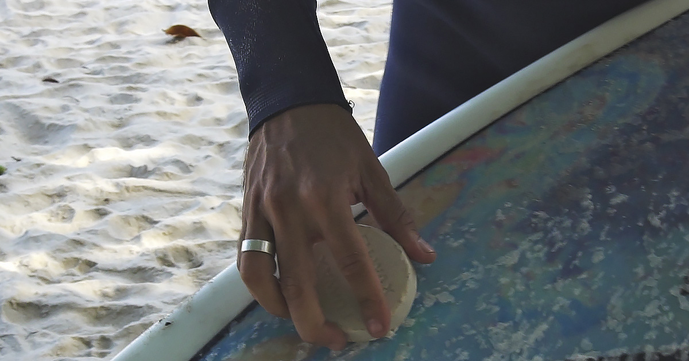
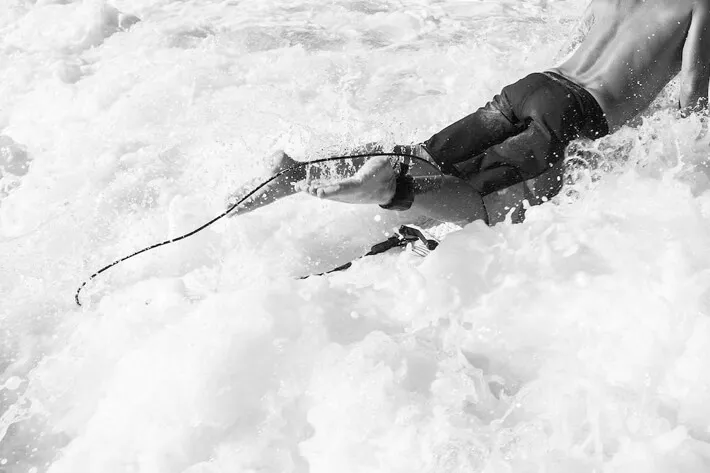

O Surf

De acordo com os relatos históricos o surfe teve sua origem há muitos anos, os Polinésios foram provavelmente os primeiros que
se aventuraram sobre as ondas do mar. Depois disso, o esporte foi crescendo e se desenvolvendo sendo praticado no Havaí e
em vários outros países. No Brasil, o surfe começou a ser praticado em meados da década de 1930, passando por diversas
dificuldades e barreiras, pois os surfistas sofriam preconceito por parte da sociedade. Na atualidade, essa imagem esta se
alterando, visto que a modalidade vem conquistando muitos adeptos e competidores no caso específico do Brasil, o quadro não
têm sido diferente, pois vem conquistando excelentes resultados nas competições nacionais e internacionais, trazendo visibilidade
e populariedade ao esporte no país.
A história do surfe é marcada por várias situações, pois sua prática já esteve interligada a diversas raízes culturais até mesmo
religiosas e com sua evolução chegou a um esporte, com o passar dos anos e desenvolvimento do mesmo, o surfe vem se tornando
cada vez mais popular no mundo, no Brasil chegou a ser considerado marginalizado, mas atualmente tornou-se um esporte popular
passando por intensa evolução realizada por profissionais capacitados tornando-se um esporte de grande impotância tanto na parte
esportiva quanto na parte social e educativa, abrangindo assim os três campos que o esporte pode ser reconhecido.
O surfe é um esporte que pela sua beleza, é visto por muitas pessoas como uma forma de dança sobre as ondas. Uma atividade que
envolve aprendizagens nos campos procedimental, atitudinal e conceitual, sendo um elemento formador para o ser humano.
O surfe é uma modalidade esportiva que compreende vários elementos da corporeidade, nele os praticantes encontram suas mais profundas emoções e sensações, com os movimentos e sentimentos ligando-se totalmente à natureza. Considerado um esporte de aventura, relaciona-se com a coragem, superação de limites físicos, motores, individuais ou no coletivo, num misto de sentimentos, prazer intenso e ligação com o mundo a sua volta.
Apesar do surfe estar passando por uma progressiva popularização nos últimos anos, devido a diversos fatores, como a ascensão de campeões como os jovens atletas: Gabriel Medina, Adriano Souza, Filipe Toledo, Ítalo erreira, Caio Ibelli, Wiggolly Dantas, Miguel Pupo entre outros e através dos meios de comunicação que tem influênciado milhões de praticantes e simpatizantes pelo mundo. Ainda observamos muita carência quanto a literatura acadêmica sobre este esporte.
Início da história do Surfe

O surfe é considerado uma das práticas corporais mais antigos do mundo. O mesmo foi criado há centenas de anos, ninguém
tem certeza como e quando o surfe foi criado, mas a ligação de sua origem com os polinésios é muito forte. No início de sua
história, ainda na Polinésia, o surfe era praticado pelos chefes da monarquia, em seus momentos de lazer, podendo assim praticar
inúmeras horas de surfe no mar. Provavelmente esta seja uma das explicações mais cabíveis em relação aos chefes das
monarquias serem excelentes surfistas. Naquela época podemos compreender que o surfe era uma prática cultural exclusiva dos
reis.
Nessa época as pranchas eram usadas como uma técnica para navegar pelo mar de maneira rápida. Até aí, não se enxergava o surf
como esporte ou entretenimento: ele tinha a finalidade de otimizar as atividades cotidianas. Somente quando chegou ao Hawaii a
prática passou a ser recreativa e algumas técnicas foram aperfeiçoadas. Com a colonização dos missionários nas ilhas havaianas, a
imposição de novos hábitos a partir de 1820 e a introdução de políticas de saneamento e enriquecimento, a cultura havaiana do
surfe sofreu um grande impacto que quase arruinou a população havaiana, reduzindo o que era de 300 mil habitantes a cerca de 40
mil habitantes (esse processo que prejudicou o surfe ocorreu entre os anos 1870 até o século XX) o surfe quase desapareceu.
Contudo, a chegada do povo branco e seu modo de vida estressante, bem como a propagação de doenças e hábitos diferentes, que
desestabilizou o modo de vida dos polinésios que viviam de forma tranquila e sem preocupações, apesar disto, o surfe não
desapareceu e entre o século XIX e XX o Havaí e o surfe se tornaram parte dos EUA.
No Havaí, em 1890, o surfe passou por um processo de grande inovação com o surgimento do Duke Kahanamoku, um dos mais famosos surfistas de todos os tempos, ele foi um dos grandes responsáveis de ser o precursor do surfe e de difundir a prática do mesmo pelo mundo, foi considerado o embaixador do esporte introduzindo-o definitivamente nos Estados Unidos e na Austrália, em 1915. Duke também foi um dos pioneiros na construção das pranchas, por onde ele passava fazia arte de shapear (fazer a prancha). Dando continuidade ao crescimento do surfe, outro grande inovador de sua prática foi Tom Blake, o mesmo trouxe consigo um novo modelo de prancha,
menor e mais leve. A costa oeste dos Estados Unidos tinha as praias com condições ideais para a prática do surfe e foi lá, na Califórnia, que entre a Primeira e a Segunda Guerra Mundial, o surfe se expandiu. Nesta época, houve uma inovação da tecnologia implicando em melhoras para o desenvolvimento do surfe, pois neste período iniciava a fabricação de produtos
derivados do petróleo, sendo assim tivemos pranchas fabricadas com materiais mais sofisticados, ajudando na perfomance dos praticantes. Contudo, o surfe não era praticado apenas como lazer, pois, a partir de 1954, aconteceram os primeiros campeonatos internacionais, dando assim um passo muito importante para o desenvolvimento do surfe, não só como prática cultural, mas também como esporte, com isso, nasce um espírito de competição no surfe, fazendo com que o mesmo passe por uma organização e se torne um esporte profissional.
A história do Surfe no Brasil

O surfe chegou ao Brasil por volta da década de 30, em Santos, no litoral Paulista e teve seu crescimento turístico e econômico
crescente durante essa mesma época, influenciado pelos comércios, restaurantes e hotéis, que passavam por um bom momento de
crescimento turístico e econômico, atrelado ao grande fluxo de despachos de comércio de café no porto da baixada para países da
América do norte, Europa e quase todo o mundo. Pois, na época os investimentos por parte dos comerciantes de café estava em alta, e
em meio a esse fluxo de pessoas alguns brasileiros tinham a oportunidade de trazerem consigo pranchas novas. Dentre eles podemos
destacar alguns desbravadores desta prática, adeptos da praia de Gonzaga em Santos, como: Silvio Malzoni, João Roberto Suplicy
Haffers e Osmar Gonçalves, que representam grandes nomes para a construção do surfe Profissional.
Osmar Gonçalves era filho de um grande exportador de café e seu pai lhe presenteou com uma revista americana chamada Popular
Mechanic, nascia aí a ideia de confeccionar uma prancha, as chamadas “Tábuas Havaianas” como eram conhecidas na época. Assim,
Osmar, Júlio Putz e João Roberto, juntos confeccionaram uma prancha de madeira com cerca de 80 kg e três metros de
comprimento, que provavelmente foi a primeira prancha de surfe brasileira. Após esse episódio, em 1947, surgem relatos de um novo surfista brasileiro Luis Vital, que construiu uma prancha chamada D-4 ou popularmente conhecida como “portas de igrejas” devido a seu formato essa prancha foi considerada um grande avanço para o surfe nacional. Portanto, com o passar dos anos estas pranchas tiveram seus formatos e materiais modificados, chegando ao novo
modelo chamado de “Maderite”, por ser feito de compensados de madeira melhorando a performance no mar. Em 1964, as primeiraspranchas de fibra de vidro chegaram ao Brasil, vindas da Califórnia, no ano seguinte foi fundada a primeira federação de surfe do país, a federação Carioca, que foi responsável pelo primeiro campeonato de surfe nacional neste mesmo ano. Nos anos 90, as pranchas passaram a ser feitas de fibras mais leves e resistentes o que otimizou e popularizou a prática do surfe nas praias brasileiras.
Então surge em 1967, a primeira loja de surfe no Brasil, auxiliando no crescimento do esporte, na época expandiram-se a prática em outras praias, como a Prainha, Guaratiba e Saquarema. Anos após, no Rio de Janeiro, foram realizadas obras de um projeto de saneamento básico no Pier de Ipanema, retirando grandes quantidades de areia e formando dunas nesses locais, o que aumentou a quantidade de ondas. Nesta época foi criada a Associação de Surfe de Ubatuba, que promoveu festivais de surfe de 1972 a 1987 e em 1977 foi fundada a “Internacional Professional Surfers” que coordenava campeonatos de surfe e incluiu o Brasil no Circuito Internacional, trazendo mais adeptos e patrocinadores ao surfe na época. Os surfistas eram chamados de preguiçosos, alienados e drogados. Isto na década de 1960-1970, só que o surfe evoluiu, foram criadas associações que deram um impulso muito grande para o surgimento do surfe profissional. Sendo assim, hoje em dia o surfe como um dos esportes de maior aceitação no Brasil. Recentemente, estima-se que existem muitos praticantes de surfe no Brasil, seria uma média de 2,7 milhões de praticantes de surfe, dentre esses atletas profissionais e adeptos, que buscam esta prática apenas como lazer. O surfe já está sendo considerado o quarto esporte mais praticado no país, sendo o segundo mais praticado somente por homens. O surfe também é apontado como um dos esportes que mais atrai olhares do público pela televisão.
Regras e Normas de Conduta Cultural


A singularidade no modo de vida dos surfistas possui algumas regras básicas, uma espécie de “etiqueta do surfe” que devem ser seguidas e respeitadas por seus praticantes. Diferentemente de outros esportes, essas regras e regulamentos rigorosos são chamadas de “código de conduta”, uma espécie de “acordo de cavalheiros”, que devem ser seguidas para evitar problemas entre todos os que estão envolvidos no processo do surfe.
Os surfistas pegam uma onda e realizam manobras em cima de uma prancha. Eles são avaliados por cinco juízes com base na variedade, tipo e dificuldade da apresentação, velocidade, força e fluxo (a forma como ele conecta perfeitamente seus movimentos de uma manobra a outra).Nessa edição, serão 48 atletas ao todo, sendo 24 na categoria feminina e 24 na categoria masculina, num total de 48 surfistas - 8 a mais do que na edição de Tóquio 2020. Os atletas estão divididos em oito baterias de três surfistas cada uma. O primeiro de cada grupo avança às oitavas de final, e os outros dois disputam uma repescagem. Cada bateria dura em média 30 minutos.
Não existem muitas regras complicadas no surfe profissional. Cada atleta busca somar as duas melhores notas entre as ondas surfadas, e cada onda é avaliada de 1 a 10 pontos, com casas decimais, em uma possível soma total de 20 pontos.
Confira a escala de notas:
[0.0 – 1.9: Ruim]
[2.0 – 4.9: Regular]
[5.0 – 6.4: Boa]
[6.5 – 7.9: Muito Boa]
[8.0 – 10.0: Excelente]
A prioridade é uma das regras do surfe que promove a parceria e a cordialidade, tradicionais do esporte. Na regra, o surfista que chegar mais rápido
até o local onde as ondas se formam, ganha a prioridade e escolhe as ondas que quer surfar. Quando o surfista pega a onda ou rema para uma onda e perde, ele deixa de ter a prioridade.
Outros surfistas da bateria podem remar e até pegar a mesma onda, desde que não prejudiquem o potencial de nota do surfista que detém a prioridade. Caso um atleta que não tem a preferência atrapalhe a remada para a onda ou até mesmo a onda do surfista na preferência, ele poderá ser punido por interferência. O sistema de prioridades vem sendo cada vez mais utilizado por atletas como estratégia: surfistas que estejam em vantagem seguram a prioridade para impedir que os adversários peguem ondas com bom potencial.
Materiais e Equipamentos


Todo surfista, seja veterano ou iniciante, tem por obrigação conhecer muito bem os diversos equipamentos para a prática do surfe, pois, são fundamentais para a sua segurança, destreza e desempenho na execução de manobras sobre as ondas. Diante disso iremos citar os principais equipamentos do surfe que são: prancha, parafina, leash e roupa de neoprene.
A prancha é o principal equipamento do surfe, que desde os primórdios dos antigos polinésios eram equipamentos feitos especificamente para as condições do mar e esportista. Com características específicas para cada surfista que aperfeiçoam a prática do surfe e minimizam possíveis acidentes ou lesões ligadas a prática do esporte.
Também convém ressaltar que a partir do desenvolvimento de equipamentos, surgiram modelos de pranchas, que contemplam novos estilos de surfe, como por exemplo: Longboard, Gun, Funboard. Atualmente, essas pranchas de surfe são feitas de fibra de vidro e poliuretano, acredita-se que a evolução do surfe e das pranchas caminharam juntas no decorrer de muitos anos, sendo assim, a prancha tornou-se mais eficiente e acessível a este novo público em contínua adesão ao surfe.
A parafina é fabricada com variedade e de acordo com as condições climáticas específicas. É um elemento de suma importância para a segurança e eficácia do surfista, pois, passando a parafina na prancha com movimentos circulares, o surfista melhora a superfície da prancha (deck), evitando desequilíbrio, escorregões. A parafina é usada para dar maior aderência na parte de cima da prancha, deve ser aplicada uma camada fina, pois uma camada muito espessa pode fazer o efeito contrário do desejado, além de poder provocar assaduras na região da barriga. A parafina deve ter sua manutenção em dia e ser removida e trocada periodicamente.
Outros surfistas da bateria podem remar e até pegar a mesma onda, desde que não prejudiquem o potencial de nota do surfista que detém a prioridade. Caso um atleta que não tem a preferência atrapalhe a remada para a onda ou até mesmo a onda do surfista na preferência, ele poderá ser punido por interferência. O sistema de prioridades vem sendo cada vez mais utilizado por atletas como estratégia: surfistas que estejam em vantagem seguram a prioridade para impedir que os adversários peguem ondas com bom potencial.
O leash basicamente é uma corda de material elástico que conecta o surfista a sua prancha de surfe. Devido a importância da segurança no mar o surfista deve ter absoluta certeza que sua prancha está equipada com o leash, que fica preso ao tornozelo e na parte de trás da prancha. Seu uso assegura a ligação entre o surfista e sua prancha, evitando que o surfista perca seu instrumento de prática e também dá a segurança no caso de possíveis acidentes.
A roupa de neoprene é uma barreira térmica entre o corpo e os elementos externos no mar. Quando molhada funciona como um isolamento térmico, permitirá a entrada de água que irá aquecer com o calor do corpo. Geralmente é utilizada em águas muito frias para evitar a fadiga muscular e a hipotermia.
Regras e Normas de Conduta Cultural
A singularidade no modo de vida dos surfistas possui algumas regras básicas, uma espécie de “etiqueta do surfe” que devem ser seguidas e respeitadas por seus praticantes. Diferentemente de outros esportes, essas regras e regulamentos rigorosos são chamadas de “código de conduta”, uma espécie de “acordo de cavalheiros”, que devem ser seguidas para evitar problemas entre todos os que estão envolvidos no processo do surfe.
Os surfistas pegam uma onda e realizam manobras em cima de uma prancha. Eles são avaliados por cinco juízes com base na variedade, tipo e dificuldade da apresentação, velocidade, força e fluxo (a forma como ele conecta perfeitamente seus movimentos de uma manobra a outra).Nessa edição, serão 48 atletas ao todo, sendo 24 na categoria feminina e 24 na categoria masculina, num total de 48 surfistas - 8 a mais do que na edição de Tóquio 2020. Os atletas estão divididos em oito baterias de três surfistas cada uma. O primeiro de cada grupo avança às oitavas de final, e os outros dois disputam uma repescagem. Cada bateria dura em média 30 minutos.
Não existem muitas regras complicadas no surfe profissional. Cada atleta busca somar as duas melhores notas entre as ondas surfadas, e cada onda é avaliada de 1 a 10 pontos, com casas decimais, em uma possível soma total de 20 pontos.
Confira a escala de notas:
[0.0 – 1.9: Ruim]
[2.0 – 4.9: Regular]
[5.0 – 6.4: Boa]
[6.5 – 7.9: Muito Boa]
[8.0 – 10.0: Excelente]
A prioridade é uma das regras do surfe que promove a parceria e a cordialidade, tradicionais do esporte. Na regra, o surfista que chegar mais rápido
até o local onde as ondas se formam, ganha a prioridade e escolhe as ondas que quer surfar. Quando o surfista pega a onda ou rema para uma onda e perde, ele deixa de ter a prioridade.
Outros surfistas da bateria podem remar e até pegar a mesma onda, desde que não prejudiquem o potencial de nota do surfista que detém a prioridade. Caso um atleta que não tem a preferência atrapalhe a remada para a onda ou até mesmo a onda do surfista na preferência, ele poderá ser punido por interferência. O sistema de prioridades vem sendo cada vez mais utilizado por atletas como estratégia: surfistas que estejam em vantagem seguram a prioridade para impedir que os adversários peguem ondas com bom potencial.
Benefícios ao Praticar Surfe
A singularidade no modo de vida dos surfistas possui algumas regras básicas, uma espécie de “etiqueta do surfe” que devem ser seguidas e respeitadas por seus praticantes. Diferentemente de outros esportes, essas regras e regulamentos rigorosos são chamadas de “código de conduta”, uma espécie de “acordo de cavalheiros”, que devem ser seguidas para evitar problemas entre todos os que estão envolvidos no processo do surfe.
Os surfistas pegam uma onda e realizam manobras em cima de uma prancha. Eles são avaliados por cinco juízes com base na variedade, tipo e dificuldade da apresentação, velocidade, força e fluxo (a forma como ele conecta perfeitamente seus movimentos de uma manobra a outra).Nessa edição, serão 48 atletas ao todo, sendo 24 na categoria feminina e 24 na categoria masculina, num total de 48 surfistas - 8 a mais do que na edição de Tóquio 2020. Os atletas estão divididos em oito baterias de três surfistas cada uma. O primeiro de cada grupo avança às oitavas de final, e os outros dois disputam uma repescagem. Cada bateria dura em média 30 minutos.
Não existem muitas regras complicadas no surfe profissional. Cada atleta busca somar as duas melhores notas entre as ondas surfadas, e cada onda é avaliada de 1 a 10 pontos, com casas decimais, em uma possível soma total de 20 pontos.
Confira a escala de notas:
[0.0 – 1.9: Ruim]
[2.0 – 4.9: Regular]
[5.0 – 6.4: Boa]
[6.5 – 7.9: Muito Boa]
[8.0 – 10.0: Excelente]
A prioridade é uma das regras do surfe que promove a parceria e a cordialidade, tradicionais do esporte. Na regra, o surfista que chegar mais rápido
até o local onde as ondas se formam, ganha a prioridade e escolhe as ondas que quer surfar. Quando o surfista pega a onda ou rema para uma onda e perde, ele deixa de ter a prioridade.
Outros surfistas da bateria podem remar e até pegar a mesma onda, desde que não prejudiquem o potencial de nota do surfista que detém a prioridade. Caso um atleta que não tem a preferência atrapalhe a remada para a onda ou até mesmo a onda do surfista na preferência, ele poderá ser punido por interferência. O sistema de prioridades vem sendo cada vez mais utilizado por atletas como estratégia: surfistas que estejam em vantagem seguram a prioridade para impedir que os adversários peguem ondas com bom potencial.